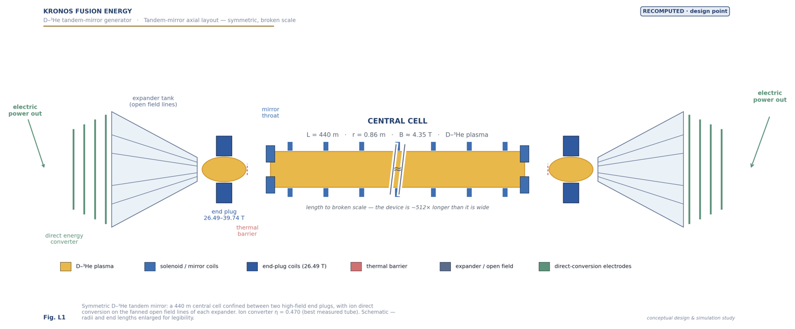
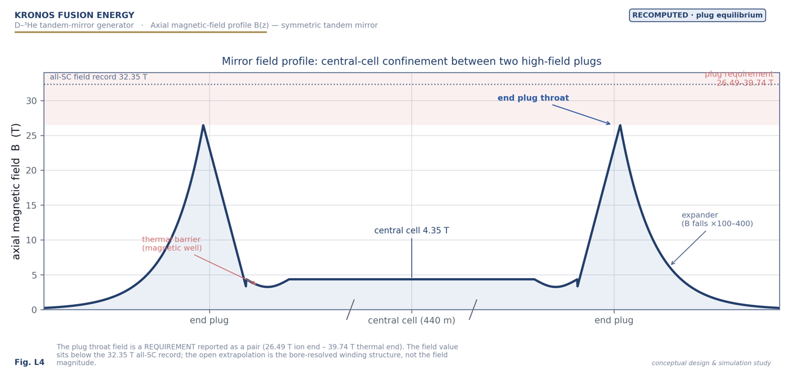
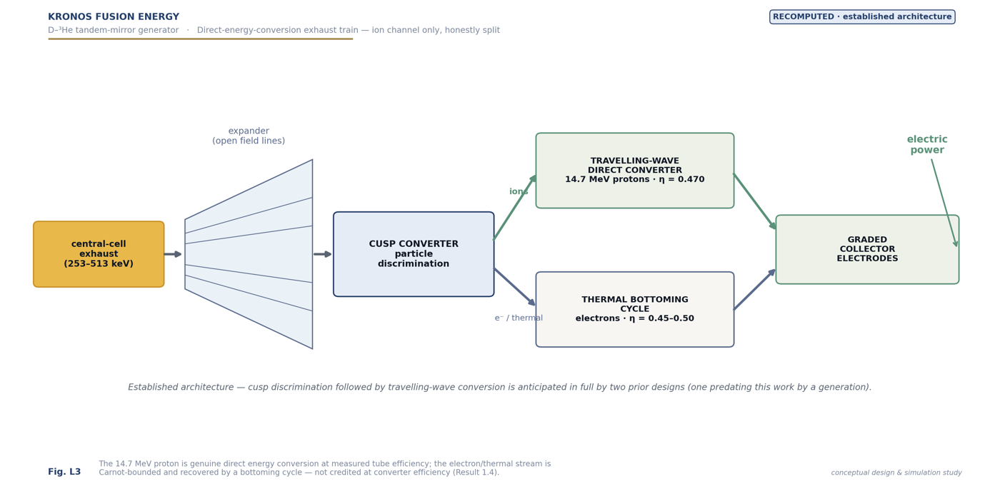
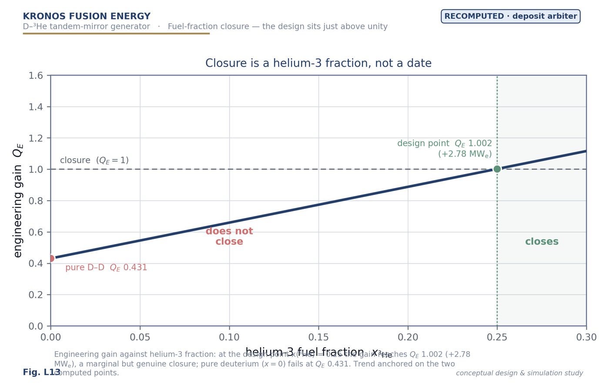

Burner · D–³He tandem mirror · reproducible closing point
The Burner — closure.
The tandem-mirror geometry (Mode M) — a long linear central cell between high-field plugs; open field lines fan into the direct converters at each end. No torus, no divertor. Two lengths — Aegis (defense / forward installations) and MetroVolt (data centers & cities).
Same closed physics as the deposit — Mode M is the reproducible closing point, locked from the
deposit's own solver (run_all.py clean, DOI 10.5281/zenodo.21746479).
At the design config (np/nc 16, x(³He) 0.30, Ti 90 keV, ne 2.6×10²⁰), engineering
gain QE = 1.31 and neutron fraction f_n 5.44% are length-independent; the net electric scales
with central-cell length. Closure is requirement-class, not demonstrated — read the plug caveat below.
⚠ The mandatory caveat — closure is requirement-class, not demonstrated
QE 1.31 requires an end-plug density np/nc ≈ 16 → plug density 4.16×10²¹ m⁻³ =
347× the GDT-measured value (26× the best published mirror design) — the design's largest open item. At the
reference np/nc = 10 the machine does not close (QE 0.63, net −160 MWe).
This is an engineering target, not a physics unknown — but it is not yet demonstrated, and this caveat travels with
every QE here.
Try
QE and f_n are length-independent. The
closure window is x(³He) ∈ [0.20, ~0.43]; f_n falls ~3.4× across it (9.52% → 2.77%). Design x=0.30; free clean-shift
to x=0.35 (f_n 4.18%, still net-positive). Near-aneutronic x≥0.45 does not close — a redesign, not a fuel change.
Engineering gain QE
—
requirement-class · Q_p 3.54
Neutron fraction
—
% of Pfus · low-neutron
Net electric · 55 m ref
—
MWe · scales with length
Fusion power · 55 m
—
MW
Cleaner vs x=0.30
—
neutron-fraction change
Closes?
—
at n_p/n_c ≈ 16
Length sets the power · frozen design point (x=0.30, QE 1.31, f_n 5.44%)
55 m · reference
+104 MWe
P_fus 0.54 GW
440 m · Aegis
+850 MWe
P_fus 4.3 GW
1400 m · MetroVolt
+2832 MWe
P_fus 13.7 GW
Central-cell length is a "free capital dial" (H69): intensive quantities (QE, f_n) hold; net power scales with length.
Figures from the deposit — click to enlarge

Tandem-mirror axial layout

Axial field profile

Direct-conversion train

Helium-3 closure boundary
The honest frozen card (Mode M)
Design point x=0.30 → QE 1.31, f_n 5.44% (Q_p 3.54); reproduced on the deposit's own solver. Net electric
+104 / +850 / +2832 MWe at 55 / 440 (Aegis) / 1400 (MetroVolt) m. Descriptor: low-neutron, NOT
aneutronic. The physics closes on measured efficiencies — the hard part, done — but closure is
requirement-class: the plug density (347× GDT) is the largest open item, and the thermal barrier and electron
direct conversion remain named engineering gates. Environment: scheduled-replacement waste ≈ zero (0.035–0.144 first-wall changes in 30 yr); wall-loading
41× (Aegis) / 168× (MetroVolt) below the breeder. Not frozen (open): the plug-density requirement, lunar ³He,
REBCO plug lifetime. Source: the burner deposit · frozen M-45…M-47.